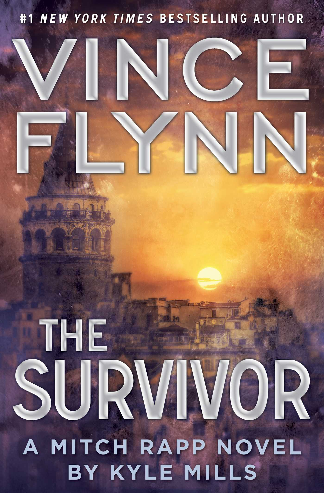

"The Survivor"
- Read on 2018-05-24
- Rating: ️️️️️
- Format: 🎧 (10 hours 39 minutes)
If you've enjoyed prior books about Mitch Rapp, I anticipate you'll enjoy this one as well. It's a standard 'ol lather-rinse-repeat, as so many in this genre tend to be, ever so gradually advancing the overall storyline.
If you've never read a book about Mitch Rapp, don't start here. Go earlier in the series, and it'll be far more enjoyable.
- Prior: The Runelords
- Next: Dawn of Wonder